| brewery_name | n |
|---|---|
| Boston Beer Company (Samuel Adams) | 39444 |
| Dogfish Head Brewery | 33839 |
| Stone Brewing Co. | 33066 |
| Sierra Nevada Brewing Co. | 28751 |
| Bell’s Brewery, Inc. | 25191 |
| Rogue Ales | 24083 |
| Founders Brewing Company | 20004 |
| Victory Brewing Company | 19479 |
Interviewing for data science jobs is hard. Since the job definition and responsibilities vary significantly between companies and roles, you never quite know what areas of the field you’ll be asked about during an interview. This is stressful for the interviewee and can result in misleading results for the interviewer.
A while back I stumbled on a great blog post by Tanya Cashorali where she goes into detail about why she’s taken to using a take-home ‘test’ to evaluate potential data scientists. She even lays out a test dataset and problems for interviews.
I loved her take on how bad many data science interviews are and I thought it would be great practice(and maybe useful for anyone who stumbles upon this post!) to work through the test she lays out. The test she proposes is simple, but can be answered on a variety of levels depending on the candidates experience. Using a dataset from the popular beer(yay beer!) review website Beer Advocate, you need to answer four analytics questions and communicate your findings:
- Which brewery produces the strongest beers by ABV?
- If you had to pick 3 beers to recommend using only this data, which would you pick?
- Which of the factors(aroma, taste, appearance, palette) are most important in determining the overall quality of a beer?
- If I typically enjoy a beer due to its aroma and appearance, which beer style should I try?
This is a really exciting dataset as a beer lover, so without further ado, let’s dive in!1
Data Exploration
I always need to get a feel for the dataset before doing any sort of analysis. With 1,586,614 reviews, the dataset is large enough that I can’t just glance at it and understand it, but small enough that I don’t have to worry about using fancy techniques to speed things up–just load the data into R and start exploring!
First, I’d like to know a bit about who’s represented in the dataset. There are 5,840 distinct breweries and 66,055 distinct beers represented. The breweries with the most reviews are pretty familiar–Sam Adams, Sierra Nevada, Dogfish, Bells– but where are the ‘macro’ breweries? It seems that the beer advocate dataset is a picture of the craft brew beer scene and won’t necessarily be representative of all beer drinkers. I guess you have to be pretty ‘in’ to beer to post reviews online and find your way into this dataset. The big 3 American macro-breweries (Anheuser, Millers and Coors) are present in the data2, but not sitting at the top with the most reviews like you might expect from the breweries that sell the most beer by volume. This isn’t particularly important for the questions being asked here, but it’s good to identify biases in your dataset as you recognize them–this dataset is definitely not representative of the beer drinking population as a whole!
Most Reviewed Breweries
Most Reviewed Beers
| beer_name | brewery_name | n |
|---|---|---|
| 90 Minute IPA | Dogfish Head Brewery | 3290 |
| Old Rasputin Russian Imperial Stout | North Coast Brewing Co. | 3111 |
| Sierra Nevada Celebration Ale | Sierra Nevada Brewing Co. | 3000 |
| Two Hearted Ale | Bell’s Brewery, Inc. | 2728 |
| Arrogant Bastard Ale | Stone Brewing Co. | 2704 |
| Stone Ruination IPA | Stone Brewing Co. | 2704 |
| Sierra Nevada Pale Ale | Sierra Nevada Brewing Co. | 2587 |
| Stone IPA (India Pale Ale) | Stone Brewing Co. | 2575 |
Second, I want to know how many reviews beers typically get. If I’m going to recommend beers, it’s probably not a great idea to recommend a beer that’s only been reviewed 1 time–even if it got a perfect review. Similarly, saying a brewery produces the strongest beers by ABV probably means two different things if one brewery makes 15 different beers while the other only makes 1. This gets to the issue of thresholding–at what level do I need to exclude reviews/beers/breweries for not having enough data to give a reasonable answer?
How Many Reviews do Beers Receive?
Code
# create df of how many reviews each unique beer has gotten
reviews_per_beer <- reviews_raw %>%
count(beer_beerid, beer_name, sort = TRUE)
# create df of mean and median for easy plot labeling
review_measures <- reviews_per_beer %>%
summarise(Mean = round(mean(n)),
Median = median(n))%>%
# gather makes it a tidy df so I can easily get legend labels
gather()
# create plot
reviews_per_beer %>%
ggplot(aes(n))+
# I like this blue
geom_histogram(fill = "#0072B2", color = 'white', alpha = .8)+
# log scale to have an interpretable plot--most beers get very few reviews
scale_x_log10()+
# use review_measures to add mean/median lines to plot
geom_vline(data = review_measures,
aes(xintercept = value, color = key),
lty = 2,
size = .9)+
# adjust y axis limits for 'better' looking graph
scale_y_continuous(limits = c(0,25000),
expand = c(0,0),
labels = comma_format())+
theme(legend.position = c(.75, .87))+
labs(x = "# of Reviews",
y = "# of Beers",
title = "How many reviews do beers get?",
subtitle = "~80% of beers receive 10 or fewer reviews",
color = "")+
my_theme_tweaks()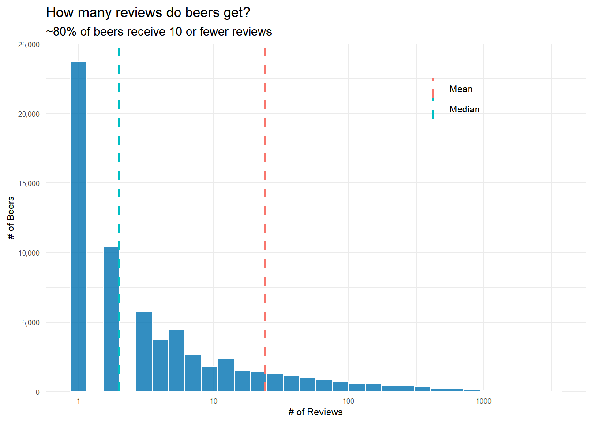
It turns out that most beers get very few reviews. Median reviews for a beer is just 2, but the mean, 24, is heavily pushed to the right by the very popular beers in the right tail of the distribution.
How Many Beers do Breweries Produce?
It’s also going to be helpful to know how many distinct beers a typical brewery produces.
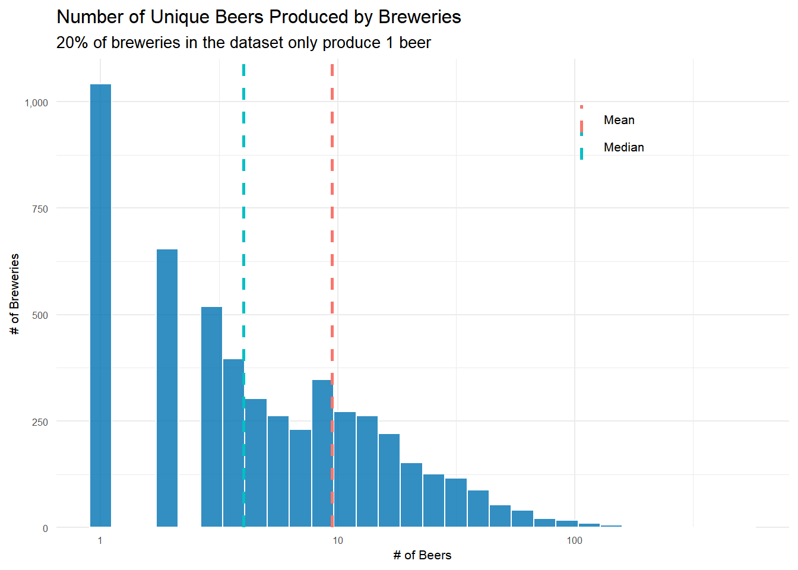
Using very similar code to that used above, I can see that 20% of breweries only make one beer! The mean number of beers a brewery produces is just 9 with a median of 4. So for the most part, breweries aren’t producing(or at least people aren’t reviewing) that many different beers. This will need to be dealt with when deciding how many beers is ‘enough’ to include a brewery in the highest ABV brewery question.
Does the Style of Beer Matter? You Bet it Does!
As a final exploratory question, I want to examine how the different styles of beer fare. Are some considerably more popular? Are some just better? Are some styles really consistent–ie you see very little variance in how it’s rated? I really have no idea, but knowing a bit more about beer styles will be helpful when recommending a beer style in question four.
First, there are 104 different styles of beer represented in the dataset. As you can see, several styles are really popular, while others are quite uncommon.
| beer_style | n |
|---|---|
| American IPA | 117586 |
| American Double / Imperial IPA | 85977 |
| American Pale Ale (APA) | 63469 |
| Russian Imperial Stout | 54129 |
| American Double / Imperial Stout | 50705 |
| beer_style | n |
|---|---|
| Happoshu | 241 |
| Kvass | 297 |
| Roggenbier | 466 |
| Faro | 609 |
| Gose | 686 |
I think it could be useful to know how beer style and overall review score interact. Knowing a little bit about beer, I could see a situation where one style–let’s say Quadrupels(Quads)–are always highly rated, but another–maybe American Lagers–are generally rated very low. Just knowing the style of a beer might give us a lot of information about how that beer is going to be reviewed.
Looking at the top 5 and bottom 5 scoring styles, it’s pretty shocking how different their average scores are. Is it really that difficult to make a delicious Light Lager? Or on the flip side, are Quads that easy to make–or do humans just love the taste of them? Who knows, but I know I want to dive a tiny bit deeper to see how much variance there is in the reviews of each style of beer. Maybe it’s possible to get a good Light Lager, but there are a host of bad ones out there dragging down the average score. Also, remember what we discovered above– this dataset isn’t at all representative of the general beer drinking population. If we had reviews from that population, I suspect the average scores of beer styles would look very different.
| beer_style | avg_score | reviews |
|---|---|---|
| American Wild Ale | 4.093262 | 17794 |
| Gueuze | 4.086287 | 6009 |
| Quadrupel (Quad) | 4.071630 | 18086 |
| Lambic - Unblended | 4.048923 | 1114 |
| American Double / Imperial Stout | 4.029820 | 50705 |
| Happoshu | 2.914938 | 241 |
| Euro Strong Lager | 2.862518 | 2724 |
| Light Lager | 2.698833 | 14311 |
| American Malt Liquor | 2.678854 | 3925 |
| Low Alcohol Beer | 2.578268 | 1201 |
Overall review scores for different beer styles: How much do they vary?
I can generate confidence intervals to see how much variance there is in the scores of different styles of beer. There are a couple different ways to approach this–mainly related to how you decide to group–and each have their advantages so I include both here.
Filter, then filter again! Styles that have 30 different beers that had at least 30 reviews
The first approach groups by unique beers and then style. So, for example, beer 1904 is an American IPA that has 3000 reviews and an average score of ~4.17. Once I have this information, I can generate confidence intervals, but I need to deal with the tricky question of what beers to include in the calculations. If a beer is only reviewed 1 time, should it be included? What about if a beer style only has 15 different beers to it’s name? In order to get a good estimation of both the point estimate and the confidence intervals, I need to have enough data about each beer, otherwise it could be that only one person reviewed a beer and they just had a terrible day and unjustly gave it 1 star–and then are skewing our analysis here.
It’s definitely a judgement call how to filter here, but I want to feel confident my intervals are meaningful. I’m only keeping beers that have >= 30 reviews(about 7100), then I count how many beers of each style remain and I’m filtering again to keep only those styles with at least 30 beers–so each style that remains has at least 30 different beers that had at least 30 reviews.
Code
library(broom)
# This first approach groups by the unique beers and styles--so it averages
# the score of each individual beer and then our final estimates are an average of
# all the unique beers in that beer style. This gives relatively more weight to beers with
# fewer reviews
# Have to group differently to show conf intervals for scores of beer styles
by_beerid <- reviews_raw %>%
group_by(beer_beerid, beer_style)%>%
summarise(reviews = n(),
avg_score = mean(review_overall))%>%
ungroup()%>%
arrange(desc(reviews))
# generate confidence intervals for styles of beer
beer_style_conf_int <- by_beerid%>%
# filter to beers with at least 30 reviews- leaves us with 7174 different beers
filter(reviews >= 30)%>%
# count how many beers of each style remain
add_count(beer_style)%>%
# filter again to keep styles with at least 30 different beers remaining
filter(n >= 30)%>%
# creates nested list column for each beer style with each beer included, it's average score
# and the total number of beers of that style
nest(-beer_style)%>%
# use this list to do a t.test and create a confidence interval for each beer style
mutate(model = map(data , ~t.test(.$avg_score)),
tidy_model = map(model, tidy))%>%
unnest(tidy_model)%>%
select(-data, -model)
# extract top 15 and bottom 15 styles
top_15 <- beer_style_conf_int%>%
top_n(15, estimate)
bottom_15 <- beer_style_conf_int%>%
top_n(-15, estimate)
# bind to one df(this seems really convoluted way of doing this)
top_bottom_conf_int <-
bind_rows(top_15, bottom_15)
top_bottom_conf_int%>%
# reorder beers by estimated overall score
mutate(beer_style = fct_reorder(beer_style, estimate))%>%
ggplot(aes(estimate, beer_style))+
geom_point()+
# errorbarh creates the 'tiefighter' style graph I like for confidence intervals
geom_errorbarh(aes(xmin = conf.low,
xmax = conf.high))+
geom_hline(yintercept = 15.5, linetype = 2, color = "#0072B2")+
geom_text(data = data.frame(),
aes(x = 2.5,
y = "Old Ale",
label = "Top Styles"),
fontface = "italic",
size = 2.5)+
geom_text(data = data.frame(),
aes(x = 2.5,
y = "English Pale Ale",
label = "Bottom Styles"),
fontface = "italic",
size = 2.5)+
labs(x = "Overall Review Score",
y = "",
title = "Top 15 and Bottom 15 Beer Styles",
subtitle = "Estimated Review Score of Beer Styles with 95% Confidence Intervals")+
my_theme_tweaks()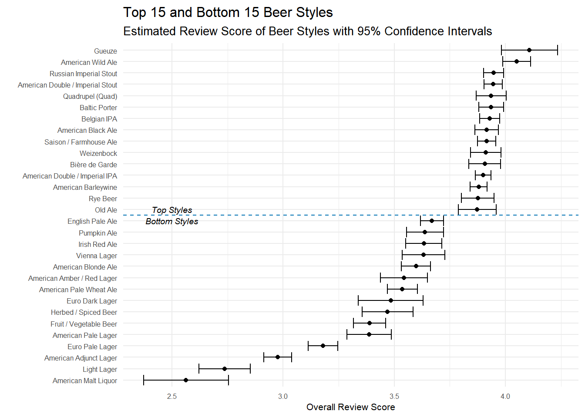
The top styles here don’t surprise me, but it’s very interesting to see which styles are more variable than others. If you were to pick a random Imperial Stout/Barleywine/American IPA, you could be pretty confident you know exactly how good of a beer you are going to get. But if you pick something like a Gueuze or Old Ale, there’s a bit more variation in how ‘good’ the beer is–it could be the best beer you’ve ever had or it could be OK.
The bottom portion of the style list is interesting not for the styles on it, but for the little bit of extra variance. Many of these styles have confidence intervals .2-.3 points wide, whereas the top styles were rarely over .1 points wide. Euro Dark Lager, for example, have a 95% confidence interval from 3.34 - 3.63. To me, this means that Euro Dark Lagers aren’t inherently bad beers, but when you order one you aren’t really sure if you are getting a good beer or one not worth drinking. Simply put, there’s a little more variance in the reviews of that style of beer.
Keep all the beers–within reason!
The filtering approach above has a clear bias. Only beers–and beer styles– that are popular are included in the final results. There are good reasons for filtering out those beers, but we definitely lose a lot of beers in the process–some 59,272. Another approach that doesn’t remove so many beers is to stop filtering out individual beers with very few reviews and instead to treat beers as members of a beer style family. So instead of removing all those beers with, say, 1 or 2 reviews, I say ‘This Pale Ale only has 1 review, but it’s still a Pale Ale, so let’s treat it like one’. I still do a quick filter to make sure no style has fewer than 30 reviews(spoiler: none do!) and then plot the results with confidence intervals.
Code
# This approach creates a unique id for each review(since there isn't one in the dataset)
# and then it groups by beer style. This means I keep all individual reviews, but those
# unique beers with very few reviews aren't present as much so they don't get a lot of weight.
# Assign a unique identifier to each review first
# This seems like a really clunky way of doing this, so I am probably missing a much simpler way.
by_reviewid <- reviews_raw %>%
mutate(unique_id = 1:nrow(reviews_raw))%>%
mutate(avg_score = review_overall)%>%
select(unique_id, beer_style, avg_score, beer_beerid)
# generate the conf intervals on the reviewid data
beer_style_conf_int_by_reviewid <- by_reviewid%>%
add_count(beer_style)%>%
# filters to beers styles with at least 30 reviews
filter(n >=30)%>%
nest(-beer_style)%>%
mutate(model = map(data, ~t.test(.$avg_score)),
tidy_model = map(model, tidy))%>%
unnest(tidy_model)
# extract top 15 and bottom 15 styles
top_15_by_reviewid <- beer_style_conf_int_by_reviewid%>%
top_n(15, estimate)
bottom_15_by_reviewid <- beer_style_conf_int_by_reviewid%>%
top_n(-15, estimate)
# bind to one df(this seems really convoluted way of doing this)
top_bottom_conf_int_by_reviewid <-
bind_rows(top_15_by_reviewid, bottom_15_by_reviewid)
# create plot
top_bottom_conf_int_by_reviewid%>%
mutate(beer_style = fct_reorder(beer_style, estimate))%>%
ggplot(aes(estimate, beer_style))+
geom_point()+
geom_errorbarh(aes(xmin = conf.low,
xmax = conf.high))+
geom_hline(yintercept = 15.5, linetype = 2, color = "#0072B2")+
geom_text(data = data.frame(),
aes(x = 3,
y = "Saison / Farmhouse Ale",
label = "Top Styles"),
fontface = "italic",
size = 2.5)+
geom_text(data = data.frame(),
aes(x = 3,
y = "Black & Tan",
label = "Bottom Styles"),
fontface = "italic",
size = 2.5)+
labs(x = "Overall Review Score",
y = "",
title = "Top 15 & Bottom 15 Styles: Beers not filtered",
subtitle = "Estimated Review Score of Beer Styles with 95% Confidence Intervals")+
my_theme_tweaks()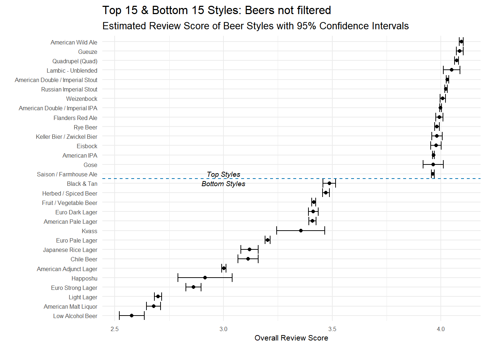
The results are pretty similar to the other approach with some small differences. First, the confidence intervals are narrower for all styles. This is expected because of how I did the grouping. Instead of having, say, 100 beers to base the estimates off of, these styles may use thousands of reviews–remember all those one review beers we filtered out before? With all that additional data, the confidence intervals should get narrower. Second, we see a handful of new styles present in the top and bottom styles. Lambic - Unblended and Gose didn’t make the cut before, but are present now. These new additions to the top and bottom styles have the wider confidence intervals because they are basing the estimates of less data.
Essentially though, the information present is the same. Reviewers love stouts, belgian ales, sours and IPAs and they tend to dislike lagers and light beers.
Which brewery produces the strongest beers by ABV%?
With a better handle on the dataset, now I can actually address the question! First things first, there are 67,785 reviews with no ABV data so I need to remove that data. It’s only 4% of all reviews, so for the time being I’m not going to worry about just removing those reviews. Now the question is–what is a strong beer anyway? You can see from the histogram of the distribution of ABV’s that the vast majority of beers are under 10% ABV.
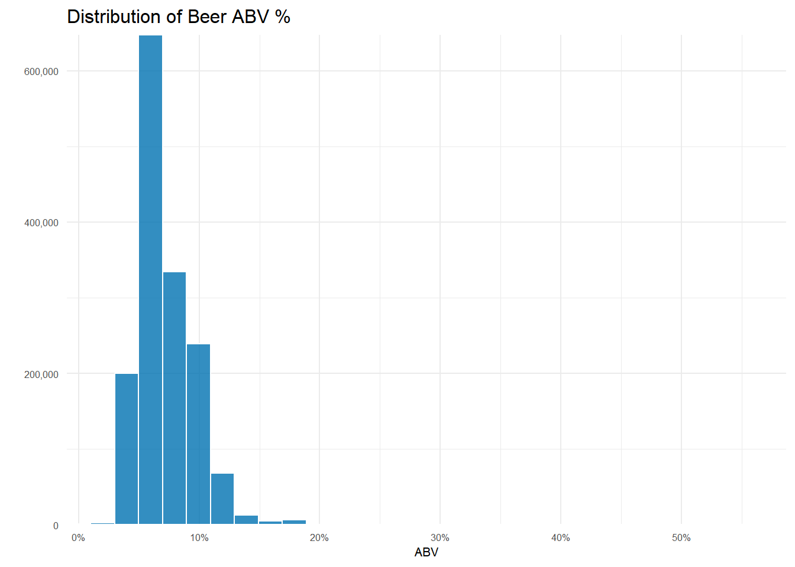
| beer_name | beer_abv | brewery_name | beer_style |
|---|---|---|---|
| Schorschbräu Schorschbock 57% | 57.70 | Schorschbräu | Eisbock |
| Schorschbräu Schorschbock 43% | 43.00 | Schorschbräu | Eisbock |
| Sink The Bismarck! | 41.00 | BrewDog | American Double / Imperial IPA |
| Schorschbräu Schorschbock 40% | 39.44 | Schorschbräu | Eisbock |
| Black Damnation VI - Messy | 39.00 | De Struise Brouwers | American Double / Imperial Stout |
Only 18 beers out of over 66,000! are over 20% ABV and as an early preview, you can see one brewery name standing out!.
If I divide the data into reviews of beers > 20% ABV and those < 20% ABV, it’s easier to see how uncommon reviews for really high ABV beers are.
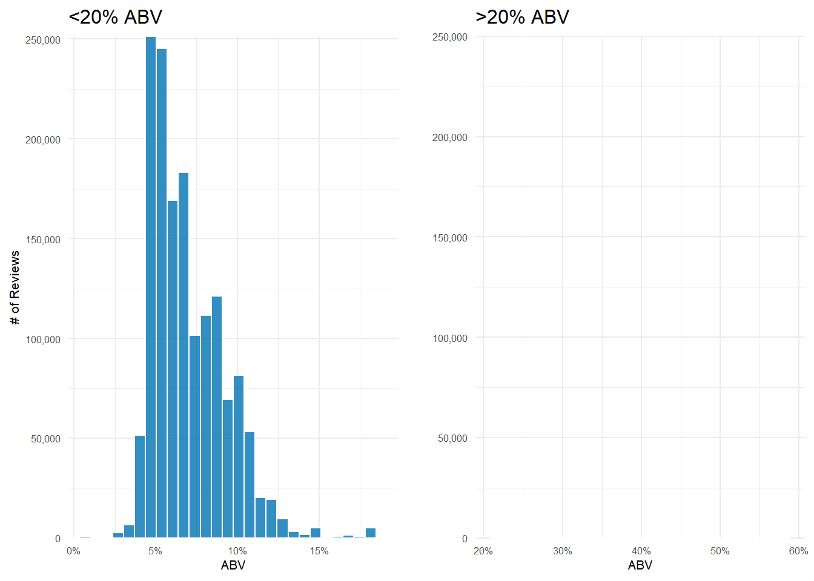
The vast majority of beers reviewed fall right around the 5-6% range. And that’s not an empty plot on the right–there’s simply so few reviews of beers >20% ABV that you can’t see them when I force the plots to have the same y-axis scale.
The question of which brewery produces the strongest beers by ABV has more nuance than it might appear. First, the question asks which brewery produces the strongest beers which I am taking to mean it needs to produce more than one beer. Second, how should I measure how strong a breweries beers are? An average of their ABVs? Maybe take the median? What about looking at the proportion of beers that a brewery produces that are above some ‘strong’ beer threshold? All these methods seem to have merit and are pretty simple and quick to perform. Let’s try them out and see what they tell us.
After a bit of filtering, grouping and aggregation(which you can see in the code below), you can see that Schorschbräu ranks at the top of both the mean and median rankings. In fact, the top 4 on both graphs are the same–albeit with one positional swap. One note: Why did I only include breweries that make 4 or more beers? Because the median number of beers produced is 4 and that seemed reasonable.
Code
average_abv <- reviews_raw %>%
# remove reviews with missing abv
filter(!is.na(beer_abv), !is.na(brewery_name))%>%
# don't want a weighted average, so we grab a df of unique beers for all breweries
distinct(brewery_id, beer_name, .keep_all = TRUE)%>%
# group them by the brewery and the beer
group_by(brewery_id, brewery_name)%>%
# getting mean, median and number of beers produced by each brewery
summarise(avg_abv = mean(beer_abv),
med_abv = median(beer_abv),
num_beers = n()) %>%
ungroup()%>%
# get the median and mean number of beers produced overall--will use for determining the threshold to cutoff breweries
mutate(mean_beers_produced_overall = mean(num_beers),
median_beers_produced_overall = median(num_beers))
# several brewery_names aren't unique; append the unique id to the brewery name to get a unique brewery_name
duplicate_names <- average_abv %>%
filter(duplicated(.[["brewery_name"]]))%>%
select(brewery_name)
average_abv <- average_abv %>%
# if the breweries in the duplicated names df, paste the id number on the end; otherwise just the brewery name
mutate(brewery_name = ifelse(brewery_name %in% duplicate_names$brewery_name, paste0(brewery_name, "(", brewery_id, ")"),
brewery_name))%>%
# several breweries have multiple names separated by '/'. Keeping only the first name used
separate(brewery_name,
sep = "/",
into = c("brewery_name", NA))
# create strongest mean beer plot
p3 <- average_abv %>%
mutate(brewery_name = fct_reorder(brewery_name, avg_abv))%>%
# Median number of beers produced is 4 so only keeping those at or above that threshold
filter(num_beers >= 4)%>%
top_n(10, avg_abv)%>%
ggplot(aes(avg_abv, brewery_name))+
geom_point(color = "#0072B2", alpha = .8, size = 4)+
scale_x_continuous(labels = scales::number_format(suffix = "%"))+
labs(x = "ABV",
y = "",
title = "By Mean",
subtitle = "")+
my_theme_tweaks()
# create strongest median beer plot
p4 <- average_abv %>%
distinct(brewery_name, .keep_all = TRUE)%>%
mutate(brewery_name = fct_reorder(brewery_name, med_abv))%>%
filter(num_beers >= 4)%>%
top_n(10, med_abv)%>%
ggplot(aes(med_abv, brewery_name))+
geom_point(color = "#0072B2", alpha = .8, size = 4)+
scale_x_continuous(labels = scales::number_format(suffix = "%"))+
labs(x = "ABV",
y = "",
title = "By Median",
subtitle = "")+
my_theme_tweaks()
ggarrange(p3, p4)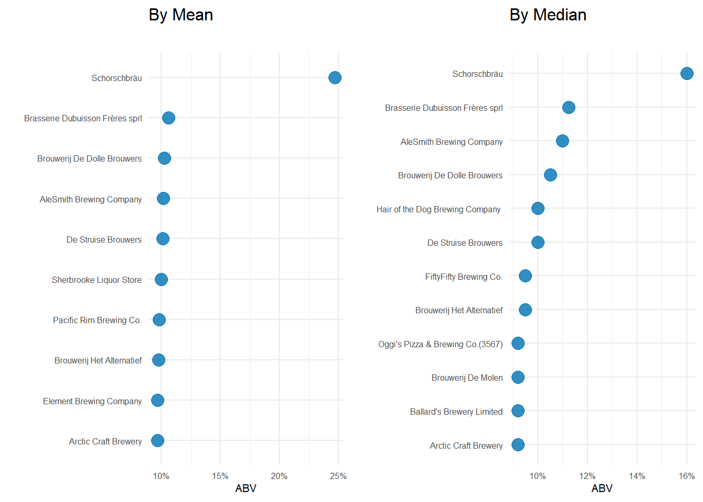
Now what if the brewery that produces the strongest beers is the one that has the highest proportion of its beers above some ABV threshold. We know the mean ABV for a beer is 6.27% (median 5.7%). In fact, the 75th percentile for beer ABV is only 7.2%. 10% is where I, personally, start to think a beer is strong and with only 6.51% of beers having greater than or equal to 10% ABV, I think it’s a pretty reasonable mark of a ‘strong’ beer.
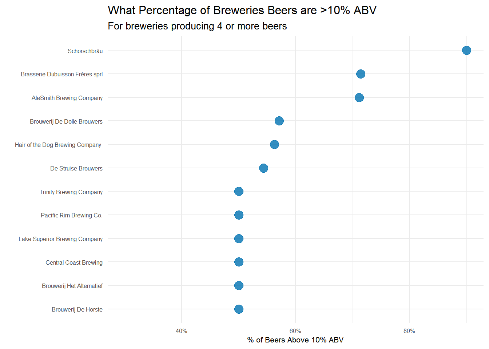
Yet again, Schorschbräu sits at the top. They only make 10 different beers, but 90% of them are 10% ABV or higher! For a brewery that produces quite a few more beers, but still cranks out high ABV stuff, AleSmith Brewing Company is up there. They make over 50 different beers and over 70% of them are above 10% ABV.
At the end of the day, Shorschbrau brewery seems to sit at the top of the ‘strong’ beer mountain–regardless of the metric I used. With a little googling, it seems they are well known for pushing the limits of strong beers. They even produce one that is 57% ABV!
| beer_name | beer_abv |
|---|---|
| Schorschbräu Schorschbock 57% | 57.70 |
| Schorschbräu Schorschbock 43% | 43.00 |
| Schorschbräu Schorschbock 40% | 39.44 |
| Schorschbräu Schorschbock 31% | 30.86 |
| Schorschbock | 16.00 |
| Schorsch Weizen 16% | 16.00 |
| Schorschbock Ice 13 | 13.00 |
| Schorschbräu Donner Bock | 13.00 |
| Schorschbräu Donner Weizen | 13.00 |
| Schorschbräu Dunkles | 4.90 |
If you had to pick 3 beers to recommend using only this data, which would you pick?
Yet again, there are several ways you could approach this question. People seem to have beer style preferences, so maybe recommending 3 beers based on what style beer you like would perform well–you like Hefeweizens, here are 3 Hefeweizens that you might like. I think this approach probably works OK, but it’s just recommending the top rated beers of each style to you. It’s possible to get more personalized recommendations by building a recommender system. I’m not sure I’d take this approach if I had a strict time limit for this take home test, but since I’m blogging about the process, I’m taking the fun approach and build a recommender system.
So what is a recommender system anyway? If you’ve ever used Netflix or Amazon you’ve encountered them many, many times. A recommendation system takes past user information–in our case beer ratings–to generate predictions for how that user would rate a beer they haven’t tried. There are many ways to do this nowadays, but an extremely popular(and good) method is called matrix factorization. If you want a detailed explanation of the math, check out this great blog post, but the intuition is relatively easy to grasp. First, you build a matrix with users(reviewers in this case) as the rows and items(beers) as the columns. Each cell is the rating that reviewer1 gave beer1, for example. When you flesh out this matrix, there will be empty cells where a reviewer hasn’t tried beer21 or beer143. With matrix factorization we predict what we think the value of these empty cells should be–what would this user rate that beer if they try it? So by predicting the value of these empty cells, the recommendation system is giving us just what we need to recommend new beers to people. What beers should you try? The ones with the highest predicted rating that you haven’t tried yet?
It certainly seems pretty hand-wavy to say we just fill in some cells and use those values to recommend beers. How do you actually generate the predictions you might wonder? We do this by discovering the latent features that determine how a user rates items. The whole concept of matrix factorization works because we can take advantage of the fact that individuals don’t have 100% unique preferences. Our preferences are clustered. Maybe we like movies with a certain actress. Maybe we like a certain genre of movie. Or perhaps we like clothing from a certain designer or with a certain color palette. With beer, maybe we like beers of a certain style or beers that are extra hoppy. These are all things that could be latent features in a recommendation system. Using these latent features we can infer that if user1 and user2 both have a feature ‘Likes movies with Tom Hanks’, then a new movie with Tom Hanks will have a high predicted value for them.
The details of how you solve for these latent features algorithmically can be found in the blog post I linked above(spoiler: you use gradient descent to solve for a user association matrix P and an item association matrix Q). For our purposes, it’s enough to think we are generating features of reviewers–reviewers that like bitter beers, reviewers that like chocolate stouts, reviewer that like beers from a certain area or of a certain ABV–and generating features for beers–beers that are high ABV, beers that are fruity or bitter, beers from a specific brewery–and using those to construct predictions for unseen beers.
Luckily, there are several great packages in R that allow for easy implementation of matrix factorization. First, I need to do a bit of cleanup. Most reviewers don’t review many beers and most beers don’t get reviewed many times. We like a sparse matrix, but we don’t gain a lot of information from reviewers that review one time or beers than are only reviewed one time. We need to only include reviewers and beers above some threshold.
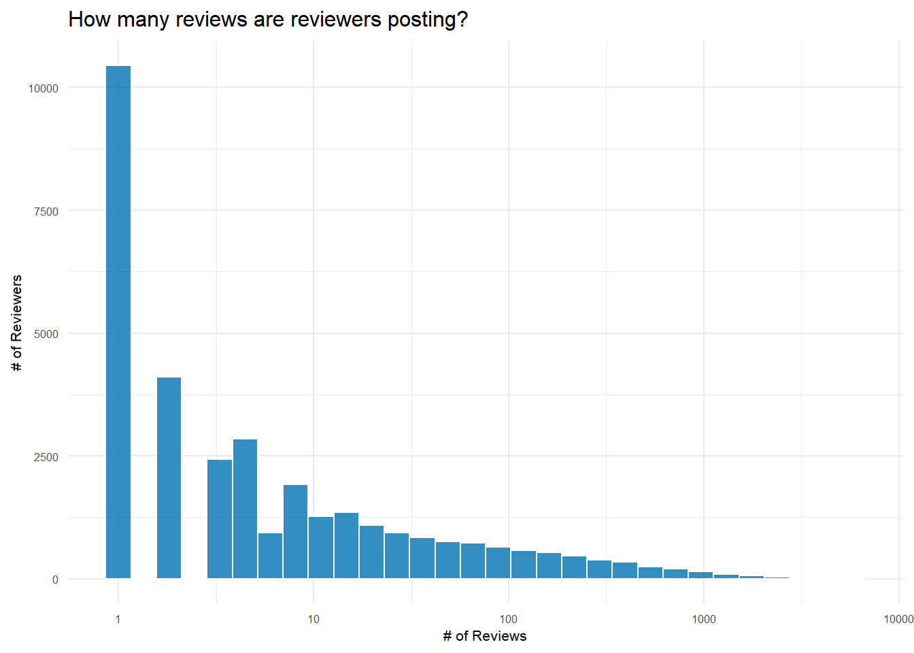
I’m filtering the dataset to only include reviewers who have reviewed at least 50 beers and only include beers with at least 100 reviews. With this dataset, I assign new indexes for user_id and beer_id (starting at 1) and then build a sparse triplet matrix–that’s just a fancy way of saying I build a matrix where I only include user and beer combinations that actually have a rating and I make sure it’s of the form (user_id, beer_id, rating).
Code
# filter to reviewers who have reviewed above 50 beers and beers with greater than 100 reviews
over_50_reviews <- reviews_raw%>%
add_count(review_profilename, name = "user_reviews")%>%
filter(user_reviews >= 50)%>%
add_count(beer_beerid, name = 'beer_reviews')%>%
filter(beer_reviews >=100,
!is.na(beer_name),
!is.na(review_profilename),
!is.na(review_overall))%>%
# add new user_id(starting at 1) and beer_id(starting at 1): needed for recosystem triplet matrix
mutate(., user_id = group_indices(., review_profilename),
beer_id = group_indices(., beer_beerid))
# recosystem requires a triplet matrix of the form (user, beer, rating)
user_beer_triplet <- over_50_reviews %>%
select(user_id, beer_id, review_overall)To train the actual model I need to specify the inputs for the training function and then set the parameters. The main parameter to focus on is dim. This determines the number of latent factors to fit. In playing around, I found that the default of 10 was too few factors. It gave reasonable recommendations, but it was essentially recommending the same beers to everyone, regardless of personal preferences. After a bit of tinkering, I decided to use 200 and see how specific the recommendations would get. You could probably go higher, but the model takes longer to fit and the results were pretty good at 200 already. The code for training and generating predictions for the recommender is in the code chunk below and I’d encourage you do check it out–even though it’s basically straight from the recosystem documentation.
Code
library(recosystem)
#create recosystem object
r <- Reco()
# training set is the set of items that actually were rated. In a more advanced system I'd have a separate train/test split for
# the training of the model
# data_memory specifics the inputs to the $train and $predict functions
train_set = data_memory(user_index = user_beer_triplet$user_id,
item_index = user_beer_triplet$beer_id,
rating = user_beer_triplet$review_overall,
index1 = TRUE)
# dim parameter controls the number of latent factors in the model.
# Default dim = 10 and that's too few--you end up having pretty much
# the same beers recommended to everyone. There is a balancing to be done here
# of creating too many latent factors and essentially overfitting and too few
# and giving really generic recommendations
r$train(train_set, opts = list(dim = 200,
costp_l1 = 0, costp_l2 = 0.01,
costq_l1 = 0, costq_l2 = 0.01,
niter = 20,
nthread = 6))
# Save model since it takes some time to generate and I need it later
saveRDS(r, "beer_reco_model.RDS")
# generate predictions for all users ahead of time and save that object
# build a grid of all user beer combinations to feed into recosystem
beers <- 1:n_distinct(user_beer_triplet$beer_id)
users <- 1:n_distinct(user_beer_triplet$user_id)
pred <- expand.grid(user = users, beer = beers)
# create recosystem specific data object
prediction_set <- data_memory(pred$user,
pred$beer,
index1 = TRUE)
# generate predictions for every user/beer combo
pred$rating <- r$predict(prediction_set, out_memory())
saveRDS(pred, "beer_reco_predictions.RDS")The model runs through 20 iterations and the RMSE is still dropping. You can really easily overfit this model. If you do 300 or even 400 latent factors the RMSE will continue to drop. In a full scale implementation, I would be using a training and testing set and/or cross validation to choose the number of latent factors that minimizes the RMSE on the train set. Here, I’m simply doing a proof of concept, so we are playing it a bit fast and loose.
With the model trained and predictions precomputed for all users, I can select some users and examine the results. I built a couple helper functions to view the results. The first takes the prediction data frame and filters out the beers that user already reviewed then returns the top 3 beers predicted for them. The second function grabs the top 10 beers that that user already reviewed so we can compare and see if the results are sensible.
Code
#using 'here' for easier paths
predictions <- here::here("Data", "beer_reco_predictions.RDS")%>%
readRDS()
top_three_beers_for_user <- function(preds = predictions, user_beer_sparse = user_beer_triplet, user_id = NULL){
# inputs:
# preds - precomputed predictions file with predictions for all users
# user_beer_sparse - user_beer matrix used to get beers specific user has tried
# user_id - specific user to recommend beers for; defaults to randomly selected user
# Default to grabbing a random user_id. If specified, use given user_id
if (is.null(user_id)){
user <- sample.int(n_distinct(user_beer_sparse$beer_id), 1)
} else{
stopifnot(is.numeric(user_id))
stopifnot(user_id != 0)
user <- user_id
}
# df of beers the specific user has reviewed
users_beers <- user_beer_sparse %>%
filter(user_id %in% user)
# return top three beers by predicted rating
# remove predictions for beers user already reviewed
preds %>%
filter(user == user_id, !(beer %in% users_beers$beer_id))%>%
arrange(desc(rating))%>%
# this join allows me to get the beer name, style and brewery name
# the prediction df is just id numbers and a rating prediction
inner_join((over_50_reviews%>%
distinct(beer_id, .keep_all = TRUE)%>%
select(beer_id, beer_name, beer_style)), by = c("beer" = "beer_id"))%>%
top_n(3, rating)%>%
select(-rating, -beer)%>%
formattable::formattable()
}
users_top_rated_beers <- function(df = over_50_reviews, user = NULL){
# function takes a specific user_id and returns the style, name and rating of their top 10(ties included) beers
df%>%
filter(user_id == user)%>%
select(user_id, beer_id, beer_name, beer_style, review_overall)%>%
slice_max(review_overall, n = 10, with_ties = FALSE)%>%
arrange(desc(review_overall))%>%
select(-review_overall, -beer_id)%>%
formattable::formattable()
}Looking at the predictions for two random reviewers in the dataset, you can see that, as expected, they are given different recommendations. User 3831 is recommended an English Bitter, a Red Ale and a Rye which seems to make sense since they have a Rye and a couple Red Ales in their highest rated beers.
Code
top_three_beers_for_user(user_id = 3831)| user | beer_name | beer_style |
|---|---|---|
| 3831 | Bluebird Bitter | English Bitter |
| 3831 | PILZILLA | Keller Bier / Zwickel Bier |
| 3831 | Ommegang Rouge | Flanders Red Ale |
Code
users_top_rated_beers(user = 3831)| user_id | beer_name | beer_style |
|---|---|---|
| 3831 | Hacker-Pschorr Münchner Gold | Munich Helles Lager |
| 3831 | Fuller’s London Pride | English Pale Ale |
| 3831 | Abbot Ale | English Pale Ale |
| 3831 | Hofbräu Original | Munich Helles Lager |
| 3831 | Newcastle Brown Ale | English Brown Ale |
| 3831 | Sierra Nevada Bigfoot Barleywine Style Ale | American Barleywine |
| 3831 | Sierra Nevada Summerfest Lager | Czech Pilsener |
| 3831 | Sierra Nevada Pale Ale | American Pale Ale (APA) |
| 3831 | Boddingtons Pub Ale | English Pale Ale |
| 3831 | Hacker-Pschorr Hefe Weisse Natürtrub | Hefeweizen |
User 270 was recommended an Imperial IPA, a Wild Ale and a Hefeweizen. This again makes since as you can see they rate many Imperial IPA’s highly. It’s pretty remarkable what a well tuned recommender system can predict and even the simple one here seems to do a pretty good job of generating reasonable recommendations for the top 3 beers for a particular reviewer.
Code
top_three_beers_for_user(user_id = 270)| user | beer_name | beer_style |
|---|---|---|
| 270 | Furious | American IPA |
| 270 | Bitter Brewer | English Bitter |
| 270 | Citra DIPA | American Double / Imperial IPA |
Code
users_top_rated_beers(user = 270)| user_id | beer_name | beer_style |
|---|---|---|
| 270 | B.O.R.I.S. The Crusher Oatmeal-Imperial Stout | Russian Imperial Stout |
| 270 | Hop 15 | American Double / Imperial IPA |
| 270 | Hop Rod Rye | Rye Beer |
| 270 | AleSmith Speedway Stout | American Double / Imperial Stout |
| 270 | AleSmith IPA | American IPA |
| 270 | YuleSmith (Summer) | American Double / Imperial IPA |
| 270 | Chimay Grande Réserve (Blue) | Belgian Strong Dark Ale |
| 270 | Trappistes Rochefort 10 | Quadrupel (Quad) |
| 270 | Unfiltered Double Simcoe IPA | American Double / Imperial IPA |
| 270 | XS Imperial India Pale Ale | American Double / Imperial IPA |
Which of the factors(aroma, taste, appearance, palette) are most important in determining the overall quality of the beer?
This is another fun question because–yet again–there are a lot of different ways you could reason about finding an answer. Initially, I wanted to use PCA. I figured I could use it to see which factor most closely corresponded to the first principle component–which is where, by definition, most of the variance occurs. But after thinking it over some more, I decided not to use this approach. Typically PCA is used when you have a lot of variables that are in play. Here, I’m only really looking at 4. While I think you could cast the problem in a way to use PCA, I don’t know that it’s the good approach, so I’m using other techniques here. I’d love to see how someone would approach this problem using PCA though, so if you get a hankering to do that, please shoot me a link to your analysis in the comments!
Instead of PCA, I’m going to do two things:
- Examine the correlations between the subfactors(taste, palette, aroma, appearance) and the overall review scores
- Fit a linear model and see which factors are most important to the model.
Linear model for feature importance
This is useful, if not completely satisfying information. Maybe we can glean a little more insight by building a linear model to see how things line up. There are a ton of more sophisticated linear models and R packages we could use here, but the base lm function is quick, easy, and will more than suffice for what I’m doing here.
Code
# get rid of 7 reviews that are zero for some reason--pretty sure it's supposed to be 1-5
reviews_zeros_removed <- reviews_raw %>%
select(review_overall, review_aroma, review_appearance, review_taste, review_palate)%>%
filter(review_overall > 0)
# Build simple linear model with no interaction effects
m1 <- lm(review_overall~ review_taste + review_aroma + review_appearance + review_palate, data = reviews_zeros_removed)
summary(m1)
Call:
lm(formula = review_overall ~ review_taste + review_aroma + review_appearance +
review_palate, data = reviews_zeros_removed)
Residuals:
Min 1Q Median 3Q Max
-3.8723 -0.2565 -0.0041 0.2441 3.6665
Coefficients:
Estimate Std. Error t value Pr(>|t|)
(Intercept) 0.4399268 0.0023020 191.10 <2e-16 ***
review_taste 0.5515190 0.0007770 709.82 <2e-16 ***
review_aroma 0.0478437 0.0007234 66.14 <2e-16 ***
review_appearance 0.0357500 0.0006998 51.08 <2e-16 ***
review_palate 0.2585047 0.0007599 340.20 <2e-16 ***
---
Signif. codes: 0 '***' 0.001 '**' 0.01 '*' 0.05 '.' 0.1 ' ' 1
Residual standard error: 0.4213 on 1586602 degrees of freedom
Multiple R-squared: 0.6581, Adjusted R-squared: 0.6581
F-statistic: 7.636e+05 on 4 and 1586602 DF, p-value: < 2.2e-16This linear model is predicting review_overall from the sub-reviews–taste, aroma, appearance and palate. With an R-squared of just .658, this model isn’t super accurate, but it’s good enough for our purposes.3 I just want to see which factor is most important to the overall review score after all. It’s tempting to look at the coefficient values and say whichever is larger is more important, but that’s not really true. Variables on different scales, variables with wildly different variances or multi-collinearity between variables will all make determining feature importance from the coefficient values problematic(if not outright wrong).
Luckily, some very smart statisticians built a package called relaimpo that will calculate more useful feature importance metrics. It turns out this is a really slippery and complicated area of statistics, so I’d encourage you to read about it here if you’d like to see how a statistician thinks about this area. There are 8 different metrics you can use in relaimpo, but they all basically give the same answer. I’ve included 5 below(lmg and betasq seem to be the most commonly used metrics) and you can see that each metric under ‘Relative importance metrics’ gives the same breakdown of feature importance:
- Taste
- Palate
- Aroma
- Appearance
Code
# calc.relimp calculates several measures that give the relative importance of the variables in a model.
metrics <- calc.relimp(m1, type = c("lmg", "first", "last", "betasq", "car"))
metricsResponse variable: review_overall
Total response variance: 0.5192339
Analysis based on 1586607 observations
4 Regressors:
review_taste review_aroma review_appearance review_palate
Proportion of variance explained by model: 65.81%
Metrics are not normalized (rela=FALSE).
Relative importance metrics:
lmg last first betasq car
review_taste 0.28889505 0.1085608974 0.6238184 0.3138592744 0.33941105
review_aroma 0.11738736 0.0009425892 0.3794776 0.0021454358 0.08843677
review_appearance 0.06859918 0.0005622868 0.2516635 0.0009341328 0.04832851
review_palate 0.18325632 0.0249380132 0.4926922 0.0598984664 0.18196159
Average coefficients for different model sizes:
1X 2Xs 3Xs 4Xs
review_taste 0.7775389 0.6717731 0.60371696 0.55151900
review_aroma 0.6362978 0.3051504 0.13827614 0.04784375
review_appearance 0.5867889 0.1872267 0.07416628 0.03575000
review_palate 0.7413930 0.4927871 0.35193831 0.25850473There is quite a bit of difference in how much more important taste is compared to appearance, but the ranking is the same regardless of the metric used–taste is most important in determining the overall review of a beer and appearance is least important.
If I enjoy a beer due to its aroma and appearance, which beer style should I try?
So what if we aren’t the typical beer drinker and what we really care about is the aroma and appearance of a beer. How should I determine what to drink then? I think a simple approach is appropriate for this question. If a beer drinker has a strong preference for beers that are very aromatic and richly colored, then they should like beer styles that score highly in the review_aroma and review_appearance variables.
For the graph below I grouped by the style of beer and then averaged the aroma and appearance scores. Additionally, I took the average of the aroma and appearance to get a sense of the total ‘smell and sight’ score.
Code
aroma_and_appearance <- reviews_raw %>%
filter(!is.na(brewery_name))%>%
group_by(beer_style)%>%
# group by style and then take average of aroma, appearance and overall
summarise(reviews = n(),
avg_aroma = mean(review_aroma),
avg_appearance = mean(review_appearance),
avg_overall = mean(review_overall))%>%
ungroup()%>%
# use the average aroma and appearance scores for each style and take the average of the two to have an aroma+appearance score
mutate(avg_aroma_appear = (avg_aroma + avg_appearance)/2)
# ggalt let's me use the geom_dumbbell geom.
library(ggalt)
aroma_and_appearance %>%
mutate(beer_style = fct_reorder(beer_style, avg_aroma_appear))%>%
top_n(25, avg_aroma_appear)%>%
select(-avg_overall)%>%
ggplot(aes(y = beer_style))+
geom_point(aes(x = avg_aroma_appear),size = 3, alpha = .8)+
# dumbbell needs both the left and right dots specified: use x and xend
geom_dumbbell(aes(x = avg_aroma, xend = avg_appearance),
size_x = 2.5,
size_xend = 2.5,
colour_x = "#D55E00",
colour_xend = "#0072B2",
alpha = .5,
size = .75)+
# identifying Aroma, appearance and avg score on plot for better visibility
geom_text(data = data.frame(),
aes(x = 4.15, y = "American Double / Imperial Stout", label = "Aroma"),
color = "#D55E00",
nudge_y = .1,
nudge_x = -.01,
fontface = 'italic',
size = 2.5)+
geom_text(data = data.frame(),
aes(x = 4.18, y = "American Double / Imperial Stout", label = "Appearance"),
color = "#0072B2",
nudge_y = .1,
nudge_x = .015,
fontface = 'italic',
size = 2.5)+
geom_text(data = data.frame(),
aes(x = 4.14, y = "Russian Imperial Stout", label = "Average of Aroma & Appearance"),
color = "black",
nudge_y = .52,
#nudge_x = -.01,
fontface = 'italic',
size = 2)+
labs(x = "Average Rating",
y = "",
color = "",
title = "Which Beer Styles Receive the Highest Aroma and Appearance Ratings?",
subtitle = "Ordered by the Average of a Styles Average Aroma and Appearance Ratings")+
my_theme_tweaks() 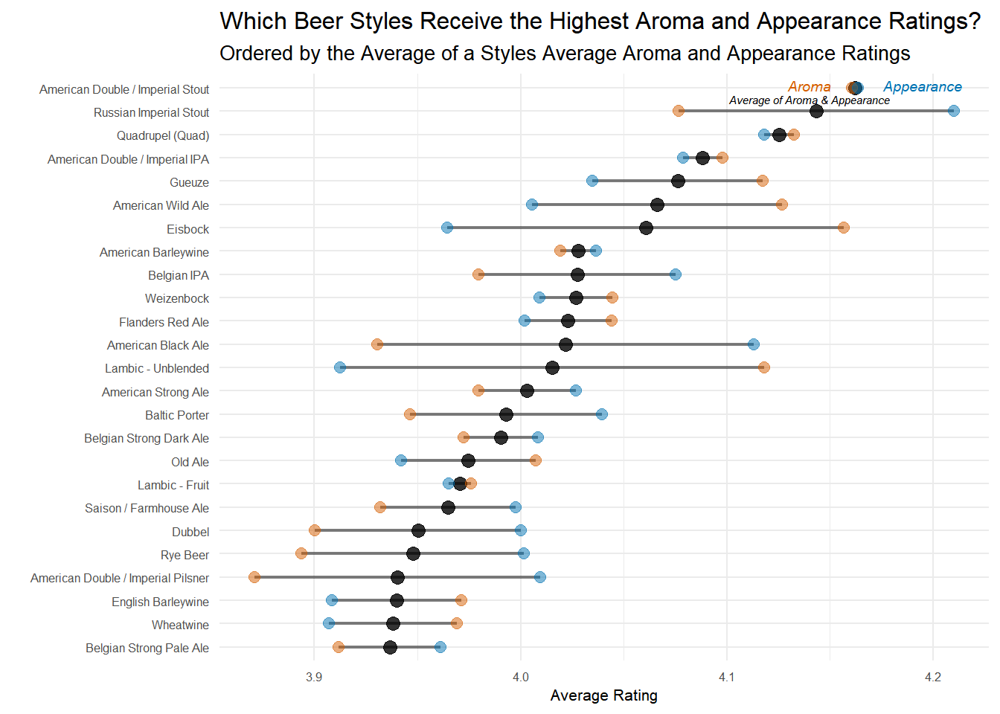
As a beer lover, this plot doesn’t surprise me much. Imperial Stouts are known for being highly aromatic and have a beautiful chocolate/ruby color that reviewers seem to like. If I’m just recommending one style, it’s probably be the American Double/Imperial Stout because it has high aroma and appearance scores, while the Russian Imperial Stout has the highest appearance score, but a slightly lower aroma score.
This graphic could also be useful if you care slightly more about, say, the aroma of a beer. You’d just try the styles with the aroma dots on the right side of the dumbbell plot – Quads, Imperial IPAs, Gueuzes, Wild Ales, or Eisbocks perhaps.
Wrapup
This was a really fun dataset to play around with, and I have to say I completely agree with Tanya Cashorali when she says this sort of take home test is a great way to interview data science job candidates. There’s a lot of flexibility in how you perform the analysis and I think you get a good idea of what someone is capable of and how they reason about solving actual problems.
As usual, the full code for this post can be found here and thanks for reading!
Code Appendix
This section includes additional code that was used–mainly to explore the data–but that didn’t make it past the cutting stage of report writing. It’s included because it’s interesting, if not directly relevant to the analysis.
App. A
Code
# A look at how often beers from the 'macro' breweries are reviewed
reviews_raw%>%
filter(brewery_name %in% c("Anheuser-Busch", "Coors Brewing Company", "Miller Brewing Co.", "Heineken Nederland B.V."))%>%
count(brewery_id, brewery_name, sort = TRUE)# A tibble: 4 × 3
brewery_id brewery_name n
<dbl> <chr> <int>
1 29 Anheuser-Busch 15815
2 306 Coors Brewing Company 7198
3 105 Miller Brewing Co. 5616
4 81 Heineken Nederland B.V. 1853App. B
Code
# Plotting distribution of 5 different review categories
reviews_zeros_removed %>%
select(starts_with('review'))%>%
gather(review_type, score)%>%
ggplot(aes(score))+
geom_histogram()+
facet_wrap(~review_type)+
scale_y_continuous(labels = number_format(), limits = c(0, 700000), expand = c(0, 0))+
labs(y = "",
x = "Score",
title = "Distribution of Review Scores",
subtitle = "Scores all have similar shapes, though Appearance may be a tad narrower")+
my_theme_tweaks()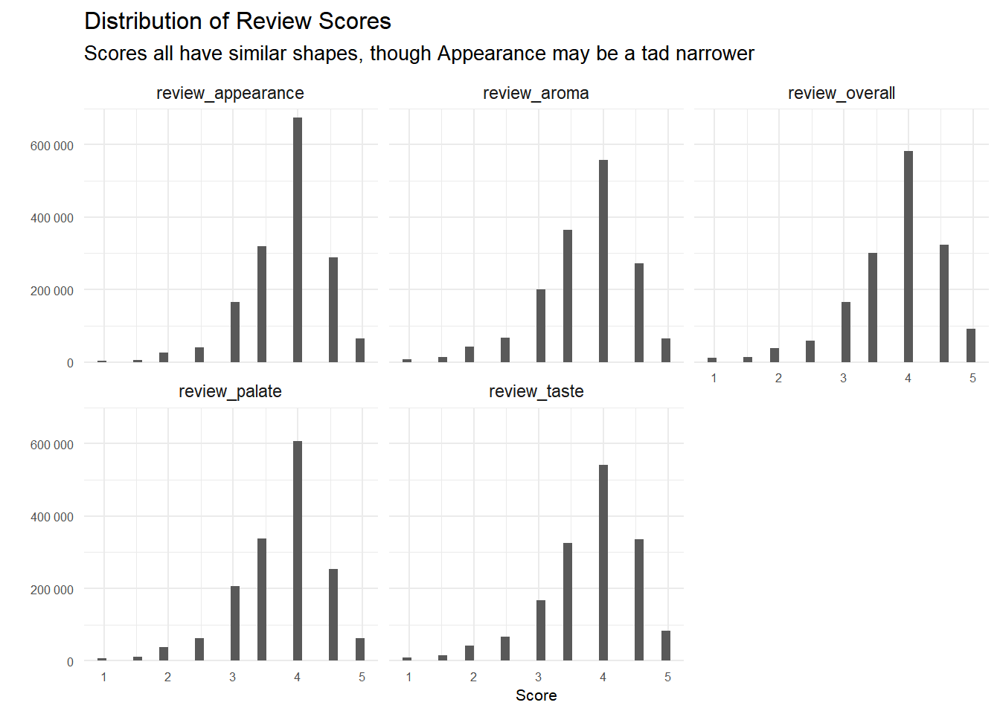
App. C
Code
# A look at percentage of a breweries beers above 15% ABV
beers_above_fifteen_perc <- reviews_raw %>%
filter(!is.na(beer_abv), !is.na(brewery_name))%>%
#alter the brewery name again like above to uniquely identify those duplicate brewery names
mutate(brewery_name = ifelse(brewery_name %in% duplicate_names$brewery_name, paste0(brewery_name, "(", brewery_id, ")"),
brewery_name))%>%
distinct(brewery_name,
beer_name,
.keep_all = TRUE)%>%
group_by(brewery_name)%>%
summarise(beers = n(),
beers_above_15 = sum(beer_abv >=15),
per_abv_15= beers_above_15/beers)
beers_above_fifteen_perc%>%
filter(beers >= 10)%>%
mutate(brewery_name = fct_reorder(brewery_name, per_abv_15))%>%
top_n(25, per_abv_15)%>%
ggplot(aes(per_abv_15, brewery_name))+
geom_point()+
scale_x_continuous(labels = percent_format())+
expand_limits(x = .02)+
labs(x = "Percentage of Beers Above 15% ABV",
y = "",
title = "Percentage of Breweries Beers which are greater than 15% ABV",
subtitle = "For breweries producing more than 10 different beers")+
my_theme_tweaks()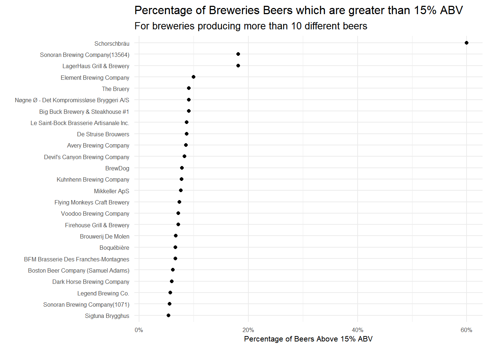
App. D
Code
aroma_and_appearance %>%
mutate(beer_style = fct_reorder(beer_style, avg_aroma_appear))%>%
top_n(25, avg_aroma_appear)%>%
select(-avg_overall)%>%
gather(key, value, -beer_style, -reviews)%>%
ggplot(aes(x = value, y = beer_style, color = key, size = reviews, alpha = .3))+
geom_point()+
guides(size = FALSE,
alpha = FALSE,
color = guide_legend(override.aes = list(size = 4,
alpha = .4)))+
theme(legend.position = c(.86, .26))+
labs(x = "Average Rating",
y = "",
color = "",
title = "Which Beer Styles Receive the Highest Aroma and Appearance Ratings?",
subtitle = "Ordered by the Average of a Styles Average Aroma and Appearance Ratings\n(Larger Points equal more reviews)")+
my_theme_tweaks()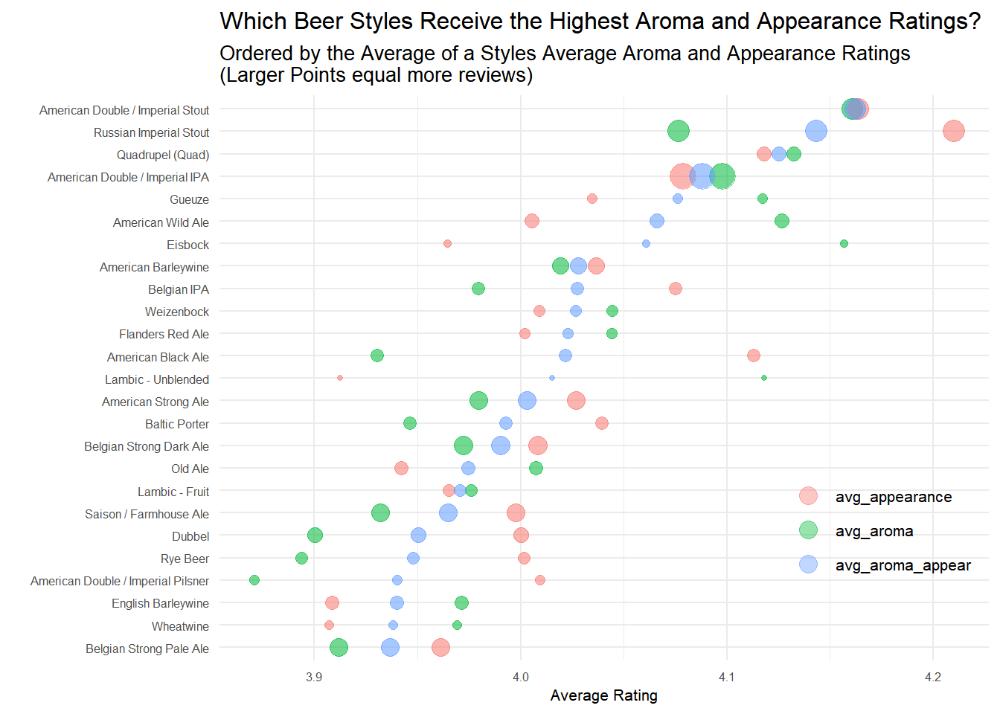